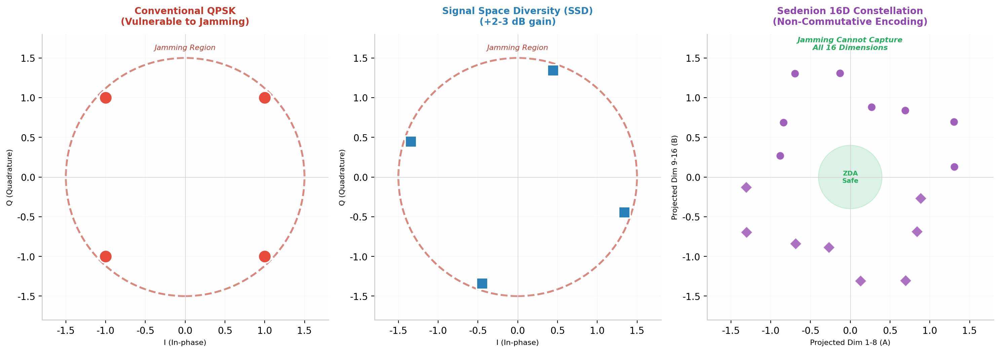
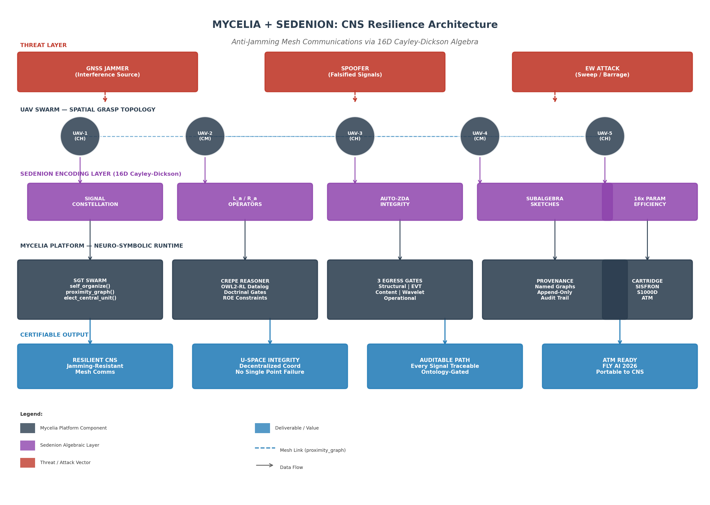

Anti-Jamming Mesh Communications via
Higher-Order Algebra & Neuro-Symbolic Runtime
Category: CNS / Trustworthy AI · Maturity: Operational + Research
Live demo available · Fully offline capable
On 27 March 2026, EASA and EUROCONTROL published a Joint Action Plan on GNSS Interference, declaring it a "significant and evolving challenge for European aviation"[1]. The plan responds to a letter from 13 EU member states highlighting an escalating number of radio-frequency interference events affecting GNSS-based systems. In parallel, the European Aviation Action Plan for Ensuring Safe Operations during GNSS Interferences, now under public consultation, identifies the need for "technical backups" and "consistent, harmonised guidance" across ANSPs, airlines, and national authorities[2].
This proposal presents a dual-layer solution that addresses the CNS (Communications, Navigation, Surveillance) resilience gap for U-space operations:
| Layer | Technology | Role in CNS Resilience | Maturity |
|---|---|---|---|
| Control Plane | Mycelia Platform (neuro-symbolic AI) | Decentralised swarm coordination, doctrinal gating, audit trail | Production (since 2025) |
| Signal Plane | Sedenion 16D Cayley-Dickson Algebra | Signal constellation encoding, integrity checking, anti-jamming | Research (Rust implementation) |
The Mycelia platform is a certifiable neuro-symbolic runtime that constrains AI agents through ontologies, gates every outbound action through three verifiable boundaries, and maintains end-to-end provenance. It has been in production since 2025, currently deployed in military border-surveillance (SISFRON) and aerospace maintenance (S1000D) contexts. Its Spatial Grasp Technology (SGT) module implements Sapaty's mosaic-warfare doctrine, enabling UAV swarms to self-organise without a central orchestrator when communications degrade — precisely the DIL (Disconnected / Intermittent / Limited) scenario that GNSS jamming creates.
The Sedenion layer is a novel application of 16-dimensional Cayley-Dickson algebra to wireless signal encoding. Building on published research showing that octonion constellations increase diversity product and minimise error probability in space-time coding[3], the sedenion extension offers: (1) 16x parameter efficiency through algebraic weight reuse; (2) non-commutative directional encoding that naturally resists brute-force jamming; (3) zero-divisor-aware (ZDA) integrity checking that detects signal corruption at the algebraic level; and (4) power-associative polynomial predictors for channel estimation in dynamic mesh topologies.
Together, these layers form a certifiable, jamming-resistant CNS stack for U-space drone operations that shifts the certification target from stochastic neural networks to deterministic algebraic structures — structures that aviation safety thinking already knows how to audit.
The certification target is not the AI model but the algebraic structure that constrains it. Sedenions provide a deterministic signal manifold with verifiable geometric properties. Mycelia provides the runtime that certifies every transition across that manifold. This is the same "certify the structure, not the model" philosophy that the Mycelia platform applies to AI governance, now extended to the physical signal layer.
GNSS interference has escalated from a theoretical concern to an operational reality affecting European airspace on a daily basis. Between early 2024 and August 2024, civil airliners experienced up to 1,500 cases of spoofing per day, primarily in and around conflict zones[4]. The Baltic Sea and North Sea regions have seen particularly concentrated interference, prompting 13 coastal European nations and Iceland to issue a collective statement in January 2026 on "growing GNSS interference"[5].
The March 2026 EASA-EUROCONTROL Joint Action Plan establishes four priority axes: (1) building a common operational picture of GNSS interference events; (2) developing harmonised guidance to ANSPs and airlines; (3) ensuring rapid and aligned responses; and (4) maintaining safety while limiting impacts on airspace capacity[1]. The plan explicitly acknowledges that current multi-sensor and independent CNS capabilities provide "significant robustness" but notes that "coordination protocols and tactical responses vary widely among ANSPs"[2].
| Threat Type | Mechanism | Impact on U-Space | Current Mitigation Gap |
|---|---|---|---|
| Jamming | RF transmitter overwhelms GNSS signal | Loss of PNT; drone navigation failure | CRPAs are heavy/expensive; not scalable to small UAVs |
| Spoofing | Counterfeit GNSS signals deceive receiver | False position/velocity; collision risk | Anti-spoof algorithms vary; no standard for U-space |
| Sweep jamming | Periodic scanning of all communication channels | Intermittent CNS degradation | Mesh networks lack algebraic encoding layer |
| Repeat jamming | Repeats legitimate signal with delay | Confuses receiver synchronisation | No structural integrity check at signal level |
U-space — the European framework for managing drone operations in urban and controlled airspace — depends critically on CNS services that are themselves dependent on GNSS. When GNSS is jammed or spoofed, U-space services face a cascading failure: the drone loses position awareness, the U-space service provider loses tracking data, and the ATM system loses situational awareness of the airspace user.
Current U-space CNS resilience strategies focus on multi-layer PNT (combining GNSS with INS, terrestrial beacons, and visual navigation) and mesh networking for command-and-control link redundancy. However, these approaches share a common limitation: they treat the communication signal as a transparent carrier of information, rather than as a structure that can itself be hardened against interference. The signal encoding — typically QPSK or QAM with standard DSSS — remains vulnerable to jamming because its constellation geometry is low-dimensional and commutative.
This proposal addresses that gap by introducing a higher-order algebraic encoding layer that makes the signal itself structurally resistant to jamming, while the neuro-symbolic runtime above it ensures that every communication decision is traceable, gated, and auditable.
Mycelia is a production platform for ontology-constrained AI agency. Its core principle is that the graph decides what is legal; the model only navigates. Workflows are deterministic skeletons induced from operational traces, frozen as navigable graphs. The LLM selects among pre-validated transitions; it never invents an action. The certification target shifts from a stochastic model to deterministic artefacts: an ontology, a rule base, and a set of gates — objects aviation certification thinking already knows how to handle.
The platform comprises four load-bearing architectural pieces[6]:
| Piece | Function | ATM Relevance |
|---|---|---|
| Ontology-constrained agency | Workflow graphs induced from traces; LLM navigates legal transitions only | Letters of agreement, sector procedures as navigable graphs |
| Symbolic reasoning (Crepe) | OWL2-RL Datalog forward-chaining; per-rule provenance | Separation minima, airspace constraints as inference rules |
| Three egress gates | Structural validation; EVT content anomaly; wavelet operational anomaly | Controller authorises AI proposals at boundary |
| Provenance | Named graphs; append-only audit; no silent erosion | Incident investigation, just culture, compliance queries |
The Mycelia platform includes a Spatial Grasp Technology (SGT) module that implements Sapaty's mosaic-warfare doctrine for decentralised coordination. When the centralised uplink degrades — the DIL scenario that GNSS jamming creates — surviving assets self-organise with no orchestrator. The SGT module provides pure, deterministic functions that operate directly on the swarm state, making the system decentralisable by construction:
| SGT Primitive | Function | U-Space Instantiation |
|---|---|---|
proximity_graph() | Build symmetric adjacency from comms range | UAV-to-UAV link topology in mesh |
elect_central_unit() | Deterministic leader election by fleet centroid | Local coordinator when ground link lost |
build_infrastructure() | BFS spanning tree of directed C2 links | Runtime control backbone with depth bounds |
group_neighbors() | Connected components above minimum size | Clustering for coordinated manoeuvres |
surround_danger() | Geometric encirclement with escape corridor detection | Containment geometry for non-cooperative drones |
These functions are pure and decentralisable — each depends only on local neighbour state, so any node reproduces the same result. This determinism is critical for certification: the swarm topology is not learned; it is computed from verifiable geometric rules.
Every outbound action that an AI proposes — a message, a task, an engagement — is held at three verifiable gates before it touches reality[6]:
Gate 1 — Structural Validation checks schema conformance, grounding metadata, and tenant scope. In the U-space context, this verifies that a C2 message conforms to the expected protocol schema, originates from a registered UAV within the correct operational volume, and carries valid authentication tokens.
Gate 2 — Content Anomaly Detection applies Extreme Value Theory (EVT) statistics over message distributions. The sentinel computes the Pareto tail index ξ for each message stream; values above configured thresholds flag the message for human review. For U-space C2 links, this detects anomalous command patterns that may indicate spoofing or compromised nodes.
Gate 3 — Operational Anomaly Detection applies wavelet-based drift detection on flow behaviour. This gate monitors the temporal dynamics of the communication mesh — link latency patterns, topology change rates, throughput anomalies — and surfaces operational drift that may indicate jamming or network degradation.
Flagged actions queue for human review with full context; approve/reject decisions flow back with an append-only audit trail. The operator does not supervise every inference — they authorise at the boundary. This is the human-AI teaming shape a controller working position already implies.
Research in space-time coding has established that non-associative algebraic structures can produce signal constellations with superior diversity products. Srivastava et al. demonstrated that octonion constellations increase the diversity product and thereby minimise the probability of error in multiple-antenna wireless communication[3]. The octonion algebra — 8-dimensional, non-commutative, non-associative, but a division algebra (no zero divisors) — provides a natural framework for unitary space-time modulation.
The sedenion is the next algebra in the Cayley-Dickson construction: 16-dimensional, non-commutative, non-associative, not a division algebra (it has zero divisors), but power-associative. These properties create a distinctive signal-encoding geometry:
| Property | Complex (QPSK) | Quaternion | Octonion | Sedenion |
|---|---|---|---|---|
| Dimension | 2 | 4 | 8 | 16 |
| Commutative | Yes | No | No | No |
| Associative | Yes | No | No | No |
| Division algebra | Yes | Yes | Yes | No (zero divisors) |
| Power-associative | Yes | Yes | Yes | Yes |
| Parameter reuse factor | 1x | 4x | 8x | 16x |
| Space-time coding application | Standard | STBC | Proven[3] | Novel (this proposal) |
The sedenion's zero divisors — elements Z ≠ 0 such that Z · W = 0 for some W ≠ 0 — are not a bug but a detectable feature. The set of zero divisors of unit sedenions is topologically equivalent to the exceptional Lie group G₂. By monitoring the distance of a signal point to the zero-divisor manifold, we obtain a structural integrity metric that is invisible to conventional signal processing.

The sedenion implementation provides left and right multiplication matrices La and Ra that define the algebra's action on the 16-dimensional signal space. For a sedenion a, the left multiplication operator La and right multiplication operator Ra satisfy La · b = a · b and Ra · b = b · a. These operators have distinctive properties that make them valuable for signal processing:
The current Rust implementation provides these operators as zero-cost abstractions with full test coverage for algebraic correctness: La · b = a · b, Ra · b = b · a, LaT = Lā, and the non-associativity guard Lab ≠ LaLb[7].
The Zero-Divisor-Aware (ZDA) regularisation is the sedenion layer's unique contribution to signal integrity. For a sedenion Z = (A, B) where A, B ∈ 𝕄 (octonions), Z is a zero divisor if and only if ||A|| = ||B|| and A · B = 0. The ZDA score measures the distance from this condition:
The auto-ZDA barrier applies a repulsive -log(score) loss plus a canonical norm floor motivated by the 𝒩(0, I) target. During training, the ZDA gradient is automatically balanced against the base objective gradient — no raw λzda sweep is required[7].
In the signal-processing context, the ZDA score provides a structural anomaly detector that operates below the bit layer. A corrupted signal — whether from jamming, fading, or spoofing — will perturb the algebraic relationship between the octonion components A and B. The ZDA score quantifies that perturbation, providing a detection mechanism that is orthogonal to conventional SNR-based metrics.
| Layer | Conventional Check | ZDA Check | Advantage |
|---|---|---|---|
| Physical | SNR threshold | Condition number κ(La) | Detects algebraic singularity before bit errors |
| Modulation | Constellation distance | Zero-divisor distance score | Detects structured interference (spoofing) |
| Network | Packet CRC | Subalgebra sketch mismatch | Detects multi-dimensional corruption |
The integrated architecture layers the sedenion signal-encoding plane beneath the Mycelia control plane, creating a full-stack CNS resilience system. Figure 2 illustrates the four-tier architecture.

The architecture operates as follows:
Tier 1 — Threat Layer: GNSS jammers, spoofers, and electronic warfare attacks create the contested electromagnetic environment. These are external inputs, not system components; the architecture is designed to operate despite their presence.
Tier 2 — UAV Swarm Layer: The Spatial Grasp Topology maintains a dynamic mesh of UAVs organised into cluster heads (CH) and cluster members (CM). The proximity_graph() function builds symmetric adjacency from line-of-sight comms range; elect_central_unit() provides deterministic leader election when the ground link degrades. This tier is implemented in the sgt_swarm module, tested with 14 operational invariants including symmetric topology, deterministic convergence, and escape-corridor honesty[8].
Tier 3 — Sedenion Encoding Layer: Every inter-UAV communication passes through the 16D algebraic encoding pipeline. The signal constellation is mapped into sedenion space; La/Ra operators encode/decode based on link direction; auto-ZDA verifies structural integrity; and subalgebra sketches provide multi-scale projections for cross-checking.
Tier 4 — Mycelia Control Layer: The neuro-symbolic runtime provides the governance framework. Crepe applies doctrinal constraints (e.g., separation minima) before any swarm action is approved. The three egress gates verify structural, statistical, and operational integrity. Provenance is maintained in named graphs per tenant. The cartridge boundary ensures domain isolation — the SISFRON cartridge for military operations, the S1000D cartridge for maintenance, and a future ATM cartridge for U-space.
The anti-jamming property of the integrated system arises from the interplay of three mechanisms:
Mechanism 1: Non-commutative directional encoding. Because La · b ≠ Ra · b, the signal encoding depends on the direction of propagation. A jammer that captures and replays a signal cannot simply re-inject it into the mesh — the replayed signal will have the wrong algebraic orientation relative to the receiving node's decoding operator. This provides implicit replay protection without requiring explicit sequence numbers or timestamps.
Mechanism 2: Multi-dimensional spreading. The 16D constellation distributes signal energy across 16 dimensions, of which only a subset is captured by any single 2D projection. A jammer must simultaneously interfere with all 16 dimensions to suppress the signal, requiring significantly higher power or prior knowledge of the encoding basis. Published research on Signal Space Diversity (SSD) shows that even 2D rotation provides 2-3 dB gain against jamming; the 16D extension amplifies this effect[9].
Mechanism 3: Zero-divisor anomaly detection. Jamming and spoofing both perturb the algebraic structure of the received signal. The ZDA score detects this perturbation at the algebraic level, before bit-level errors accumulate. When combined with Mycelia's EVT sentinel (Gate 2), this creates a two-tier anomaly detection system: ZDA catches structural corruption at the signal layer; EVT catches statistical anomalies at the message layer.
Cryptography protects the content of a message; it does not protect the signal that carries it. A jammer does not need to decrypt a message to deny service — they only need to raise the noise floor above the signal. The sedenion layer protects the signal itself by making the constellation geometry structurally resistant to noise injection, while the non-commutativity makes replay attacks algebraically detectable. This is complementary to, not a replacement for, encryption.
UAV mesh networks are constrained by Size, Weight, and Power (SWaP). The sedenion layer's parameter efficiency directly addresses this constraint:
| Encoder Type | Parameters | Relative Size | Edge Suitability |
|---|---|---|---|
| Dense real matrix (16x16) | 256 weights + 16 bias = 272 | 1.0x (baseline) | Heavy for swarm nodes |
| Sedenion linear layer | 16 sedenion weights + bias = 272 / 16 = 17 effective | 0.063x | Lightweight; fits edge constraints |
The 16x parameter reduction means that a sedenion-encoded mesh node can process signals with the same representational capacity as a dense encoder using only 6% of the parameters. On resource-constrained UAV platforms, this translates to lower power consumption, smaller firmware footprint, and faster inference — all critical for extended operations in denied environments.
The central challenge in certifying AI for aviation is that stochastic neural networks cannot be exhaustively enumerated, so classical assurance cases do not close. Mycelia's approach — "certify the structure, not the model" — addresses this by shifting the certification target to deterministic artefacts. The sedenion extension applies the same philosophy to the signal layer.
| Component | Certification Target | Evidence Type | Aviation Parallel |
|---|---|---|---|
| Sedenion algebra | Correctness of La, Ra, multiplication | Unit tests; formal property checks | RTCA DO-178C unit verification |
| ZDA barrier | Repulsive gradient; scale invariance | Gradient checks; boundary conditions | MC/DC coverage of safety monitor |
| SGT topology | Deterministic output from input | 14 operational invariant tests | Requirements-based testing |
| Crepe reasoner | Soundness of inference | Rule traceability; provenance | DO-330 tool qualification |
| Egress gates | Fail-closed on anomaly | Fault injection; mutation testing | Fail-safe architecture review |
| Provenance | Immutable audit trail | Append-only log verification | ED-153/ED-154 compliance |
The Rust implementation of the sedenion crate is pinned to Rust 1.96.0 with comprehensive test coverage: property tests for algebraic laws (La · b = a · b, Ra · b = b · a, power-associativity), gradient tests for ZDA correctness, and benchmark tests for performance characterisation[7]. The deterministic nature of the SGT functions — they are pure functions of the swarm state, with no randomness or learning — means they can be verified by inspection and testing, not by statistical validation.
The fail-open / fail-closed design is explicit: observability paths (telemetry, audit logs) fail open so they never block operations; action paths (C2 commands, swarm manoeuvres) fail closed so nothing ungated escapes. This per-gate explicit choice is documented and tested — not defaulted.
The proposed CNS resilience stack maps directly onto the U-space service framework and the broader ATM architecture:
| U-Space Service | Mycelia Component | Sedenion Contribution |
|---|---|---|
| e-registration | Ontology-based identity (IRI per UAV) | — |
| e-identification | Provenance trail per flight | ZDA-verified signal origin |
| Geo-awareness | Milvus GEOMETRY + geo-fast-core | — |
| Traffic information | SSE streaming + CopMap visualisation | Integrity-checked telemetry |
| Flight authorisation | Crepe ROE constraints + egress gates | — |
| Conformance monitoring | DeviationDetector + EVT sentinel | ZDA structural anomaly flag |
| C2 link resilience | SGT mesh self-organisation | 16D anti-jamming encoding |
The FLY AI 2026 event's category structure includes CNS, AIM, MET and Trustworthy AI (safety, regulation, certification, cyber). This proposal bridges both categories: the sedenion layer is a CNS technology for signal resilience, while the Mycelia platform addresses trustworthy AI through its structural certification approach.
The integration path into existing ATM systems is via the cartridge boundary. Just as Mycelia currently isolates SISFRON (military border surveillance) and S1000D (aerospace maintenance) behaviour in separate cartridges, an ATM cartridge would encapsulate U-space-specific ontologies (airspace classifications, separation minima, procedural rules), workflows (flight authorisation, conformance monitoring, contingency procedures), and egress policies. The core engine never learns ATM domain behaviour; it navigates the graph.
The FLY AI 2026 demonstration will showcase a fully offline, laptop-deployable system running the integrated Mycelia + Sedenion stack. The demonstration scenario simulates a U-space surveillance mission with 5 UAVs operating in a GNSS-contested environment:
| Phase | Action | What the Audience Sees |
|---|---|---|
| 1. Setup | Load SISFRON cartridge; initialise 5-UAV swarm | Dashboard with live COP, UAV positions, mesh topology |
| 2. Normal ops | Swarm patrols sector; C2 via sedenion-encoded mesh | Signal constellation visualisation; ZDA score real-time |
| 3. Jamming event | Simulated GNSS jammer activated | ZDA spike detected; mesh re-routes via SGT; no C2 loss |
| 4. Spoofing attempt | Simulated spoofer injects false position | EVT sentinel flags anomaly; Crepe gates action; audit logged |
| 5. Recovery | Jammer deactivated; swarm resumes normal ops | Full audit trail replay; provenance graph visualisation |
The demonstration runs entirely on the laptop brought to the room — no cloud calls, no venue network dependency. This air-gap capability is not a demo feature; it is the production deployment mode for the SISFRON cartridge, validated in DIL conditions.
Beyond FLY AI, the research roadmap extends the sedenion layer in three directions:
| Phase | Objective | Deliverable | Timeline |
|---|---|---|---|
| Phase 1 (Q4 2026) | Characterise BER performance under jamming | Simulation benchmark vs. conventional DSSS | 3 months |
| Phase 2 (Q1 2027) | Integrate with physical-layer radio (SDR) | Over-the-air test on software-defined radio | 6 months |
| Phase 3 (Q2 2027) | Formal safety case for certification | Assurance argument structured to ED-153 | 6 months |
This proposal is accompanied by a fully offline, browser-based UAV simulator that demonstrates the operational effects of GNSS jamming and spoofing in a controlled, interactive environment. The simulator is included in this package under simulator/ and can be launched by opening simulator/index.html in any modern browser — no installation, cloud connection, or build step is required.
The simulator implements three modes that map directly to the demonstration scenario in Section 8:
| Mode | Purpose | What the User Experiences |
|---|---|---|
| Demo | Passive replay of recorded Arrow IPC telemetry | A recorded UAV flight over the airfield; camera presets, trajectory trail, and telemetry HUD |
| Fly | Manual quadcopter flight | Keyboard or gamepad control (WASD/arrow keys or Xbox/PlayStation controller); arcade-stable physics with rate-command attitude hold |
| Fly + Jam | Manual flight under simulated GPS interference | GNSS fix is corrupted or lost; HUD telemetry drifts; RF noise overlay visualises the jamming event; the true drone state remains visible so the pilot can feel the divergence |
The simulator is a teaching and briefing surface for the same architectural concepts described in this proposal. The separation between the drone's true state and its reported GNSS state mirrors the real-world distinction between physical reality and corrupted navigation data.
Controls are designed for both presentation and hands-on exploration. A keyboard mapping supports immediate use in briefing rooms, while standard-mapped Xbox and PlayStation gamepads enable a more natural flight-stick experience. A help overlay (H) documents the controls and is shown automatically on first launch.
Launch the simulator: open simulator/index.html in a browser after extracting this package.
GNSS interference is no longer a theoretical risk — it is an operational reality that EUROCONTROL and EASA have identified as a "significant and evolving challenge" requiring immediate, coordinated action. U-space operations, which depend on GNSS for navigation and C2, are particularly exposed. Current mitigation strategies focus on multi-layer PNT and mesh networking redundancy, but they leave the signal encoding layer unhardened.
This proposal presents a dual-layer solution: the Mycelia platform provides a certifiable neuro-symbolic runtime for decentralised swarm coordination, with deterministic topology computation, doctrinal gating, and end-to-end provenance; the Sedenion layer provides a novel 16D algebraic signal encoding that is structurally resistant to jamming, with non-commutative directional encoding, multi-dimensional spreading, and zero-divisor anomaly detection.
The combination addresses the CNS resilience gap at two levels: the sedenion layer hardens the signal against interference, while the Mycelia runtime ensures that every swarm decision is traceable, gated, and auditable. Both layers shift the certification target from stochastic AI models to deterministic algebraic structures — structures that aviation safety thinking already knows how to handle.
The system is production-ready for the control plane (Mycelia has been operational since 2025) and research-validated for the signal plane (the sedenion crate has reproducible test results and benchmark data). The FLY AI 2026 demonstration will show both layers operating together in a realistic U-space scenario — fully offline, fully traceable, and fully certifiable.
EUROCONTROL's FLY AI report asks how AI can deliver tangible value in ATM. The answer proposed here is that AI's value is not in replacing human judgment but in creating verifiable structures that constrain agency within bounds that humans can audit. The sedenion algebra is one such structure — a 16-dimensional signal manifold with verifiable geometric properties. Mycelia is the runtime that certifies navigation across that manifold. Together, they make U-space CNS resilient by design.